Home / Credits
CreditsImage credits and sources
Every image on this site is public domain, carries no known restrictions, or is used under the Creative Commons license shown. Use here implies no affiliation with or endorsement by any archive, museum, the Davis Cup organization or the U.S. Army.
| Image | Title | Creator / holder | License | Link |
|---|---|---|---|---|
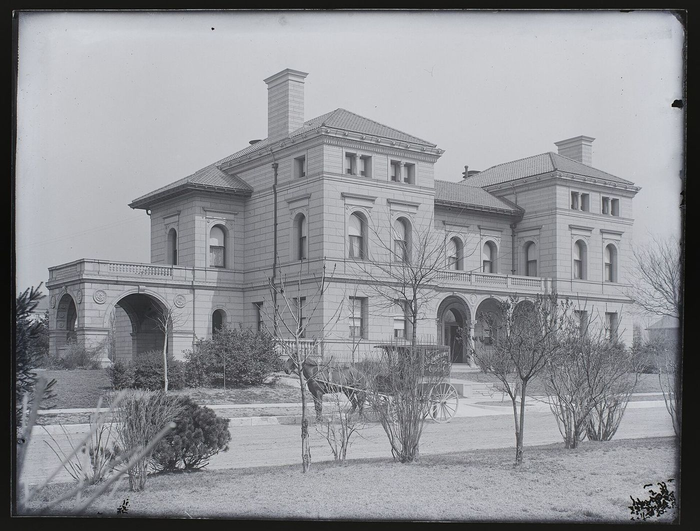 | John T. Davis residence, 17 Westmoreland Place | Photographer unknown; via DPLA | No known restrictions | Source |
 | East entrance gates of Westmoreland Place | Emil Boehl; via DPLA | Public domain | Source |
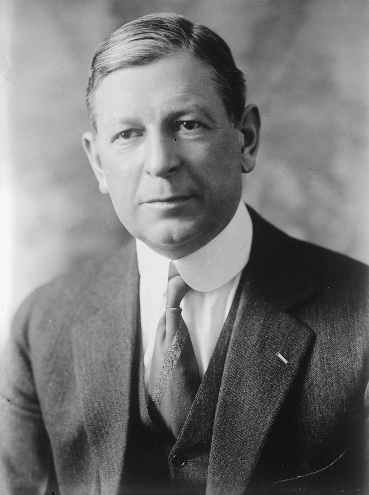 | Dwight F. Davis | Bain News Service, Library of Congress | Public domain | Source |
 | Davis Cup | Bain News Service, Library of Congress | Public domain | Source |
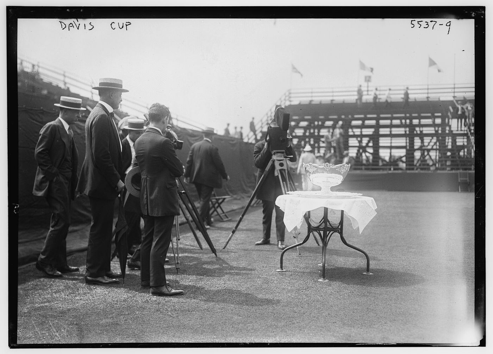 | Davis Cup | Bain News Service, Library of Congress | Public domain | Source |
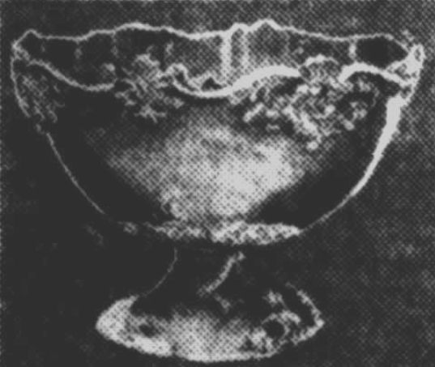 | The Davis Cup, 1922 | The Sporting Globe | Public domain | Source |
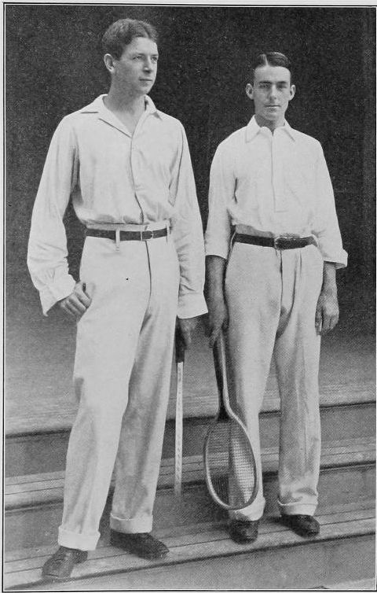 | D. F. Davis and H. Ward, 1900 | R. F. and H. L. Doherty, On Lawn Tennis (1903) | Public domain | Source |
 | Davis Cup draw at the Elysee, 1932 | Agence Rol, Bibliotheque nationale de France | Public domain | Source |
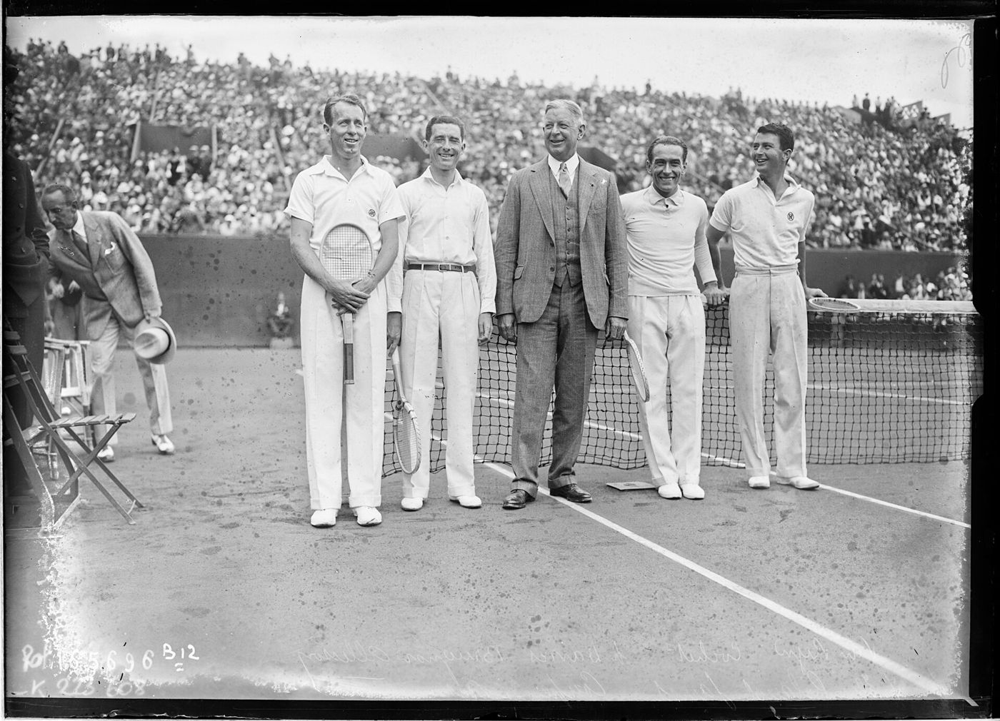 | Roland-Garros, Davis Cup, France v. United States, 1932 | Agence Rol, Bibliotheque nationale de France | Public domain | Source |
 | Swearing in of Secretary Dwight Davis, 1925 | National Photo Company, Library of Congress | Public domain | Source |
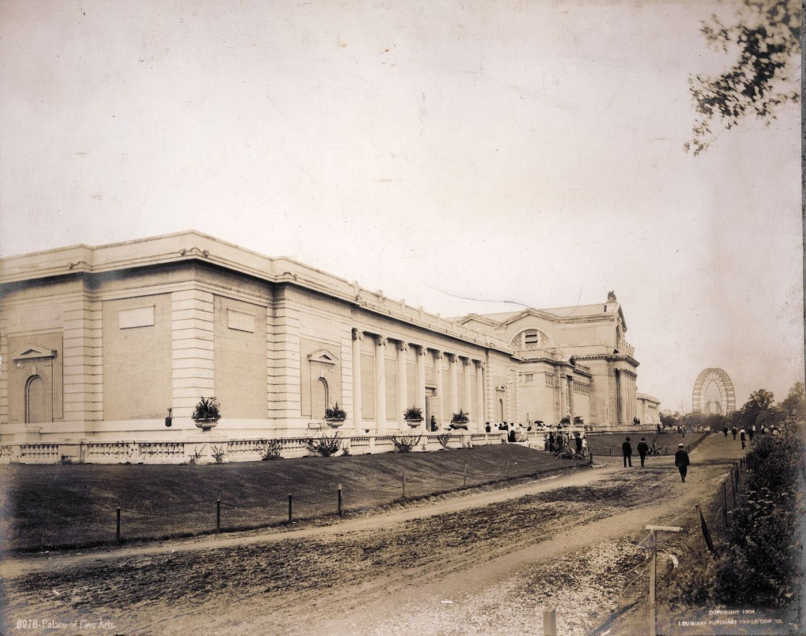 | Palace of Fine Arts, 1904 World’s Fair | Official Photographic Co. | Public domain | Source |
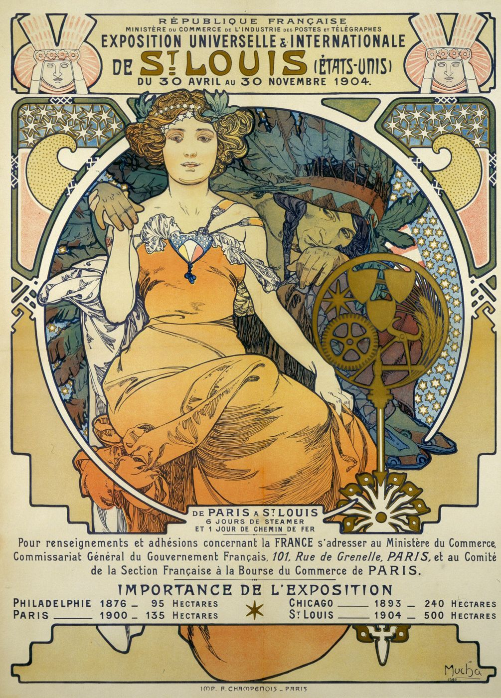 | Poster for the 1904 World’s Fair | Alphonse Mucha; Missouri History Museum | Public domain | Source |
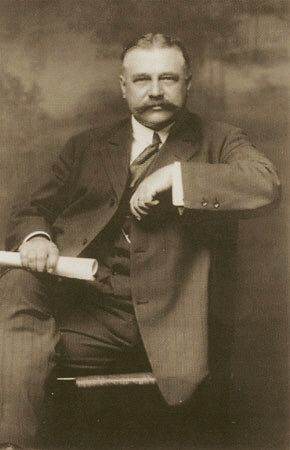 | George E. Kessler, about 1910 | Photographer unidentified | Public domain | Source |
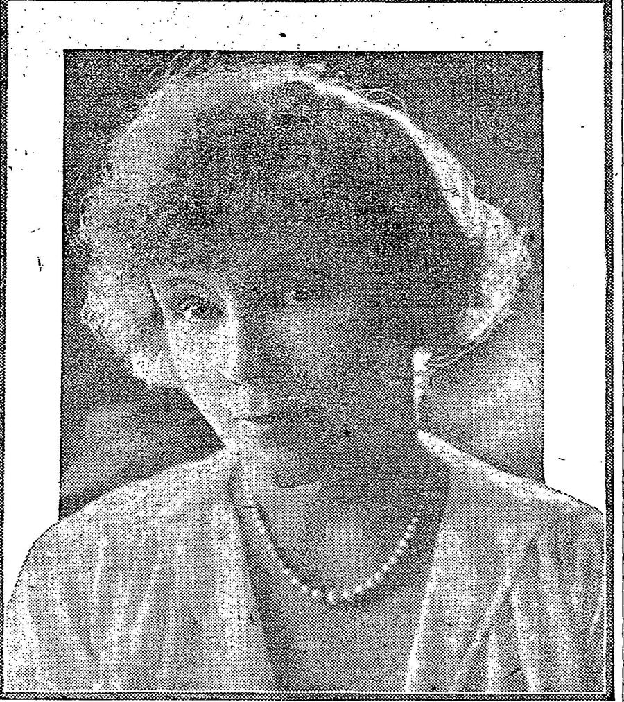 | Pauline Sabin, 1923 | Underwood & Underwood | Public domain | Source |
 | Ru ware dish | Saint Louis Art Museum, 973:1940 | Public domain | Source |
 | Ding ware bowl | Saint Louis Art Museum, 979:1940 | Public domain | Source |
 | Five-spouted vase | Saint Louis Art Museum, 1120:1940 | Public domain | Source |
 | Cizhou meiping | Saint Louis Art Museum, 945:1940 | Public domain | Source |
 | Guan ware zhadou | Saint Louis Art Museum, 1076:1940 | Public domain | Source |
 | Compound vase | Saint Louis Art Museum, 1116:1940 | Public domain | Source |
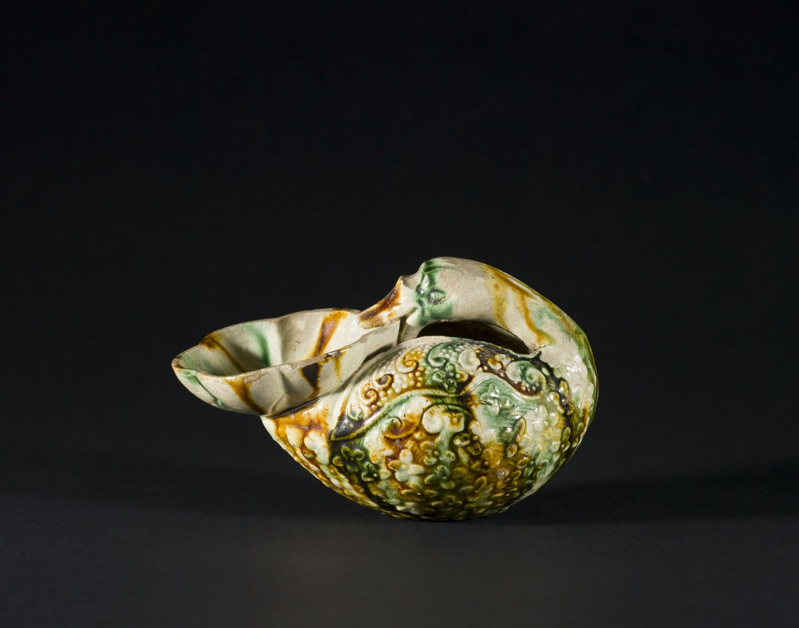 | Bird-shaped vessel | Saint Louis Art Museum, 930:1940 | Public domain | Source |
 | Red Ball Express loading | U.S. Army photograph | Public domain | Source |
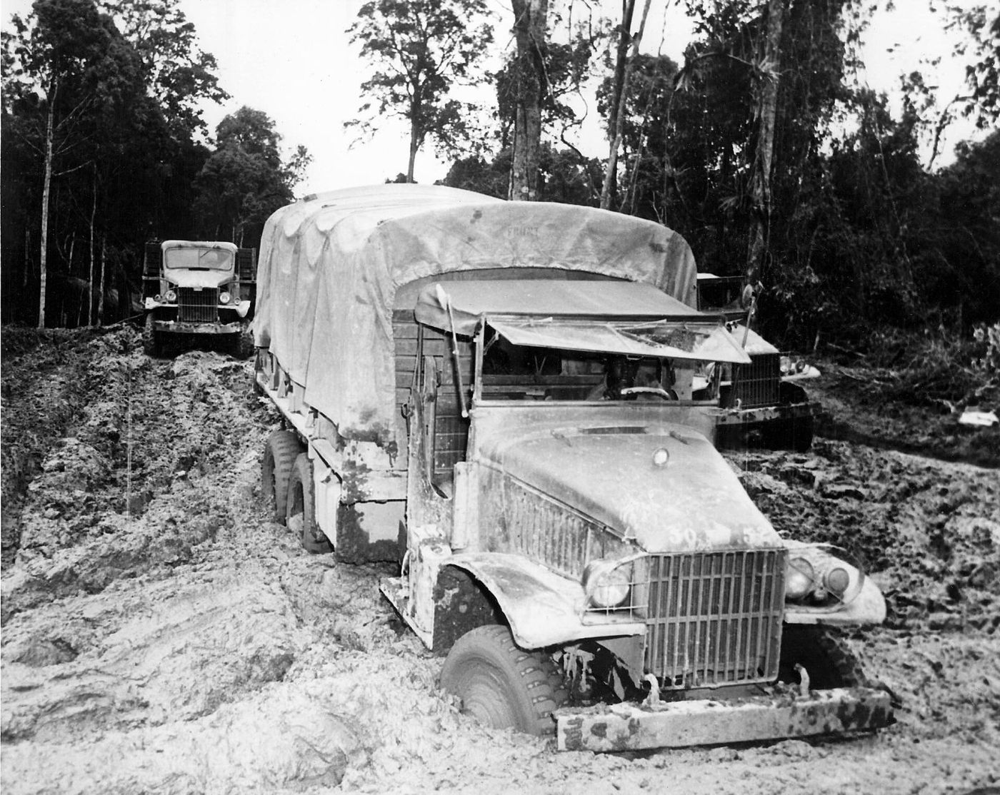 | Red Ball Express truck in the mud | U.S. military photograph | Public domain | Source |
 | Red Ball Express jerrican depot | Archives Normandie 1939–1945 | Public domain | Source |
 | Red Ball Express drivers | National Archives, 208-AA-32P-3 (NAID 535533) | Public domain | Source |
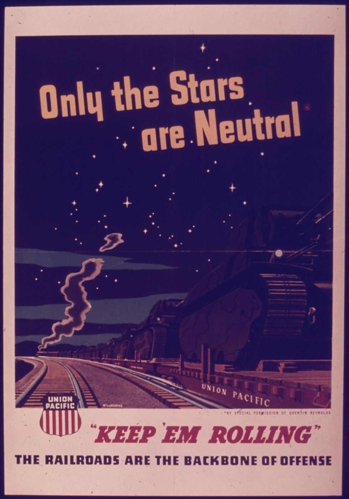 | Only the Stars Are Neutral. Keep ’em Rolling | National Archives, NAID 515127 | Public domain | Source |
 | Davis Cup final, Bucharest, 1972 | Sport (Romania), no. 19, 1972 | Public domain | Source |
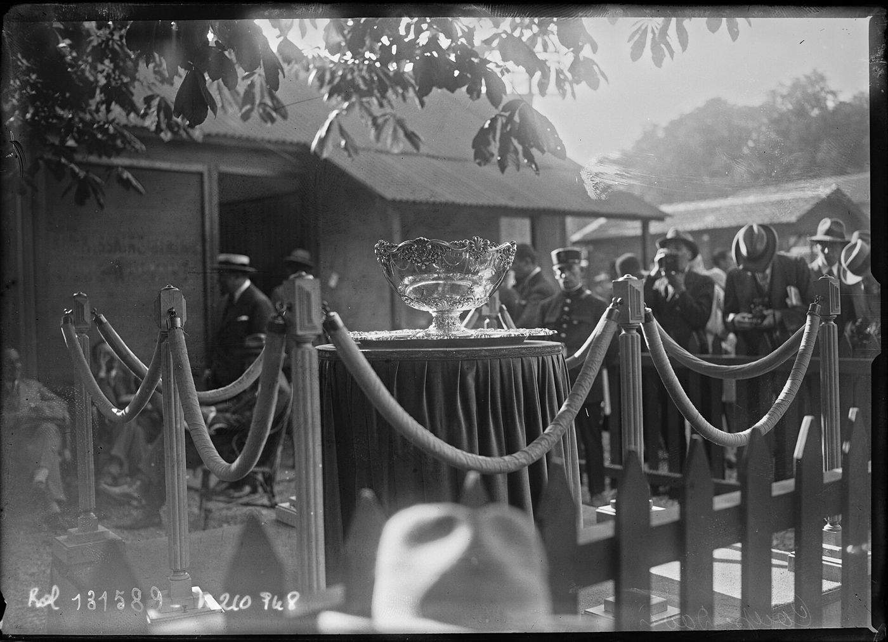 | The Davis Cup at Roland-Garros, 30 July 1928 | Agence Rol, Bibliotheque nationale de France | Public domain | Source |
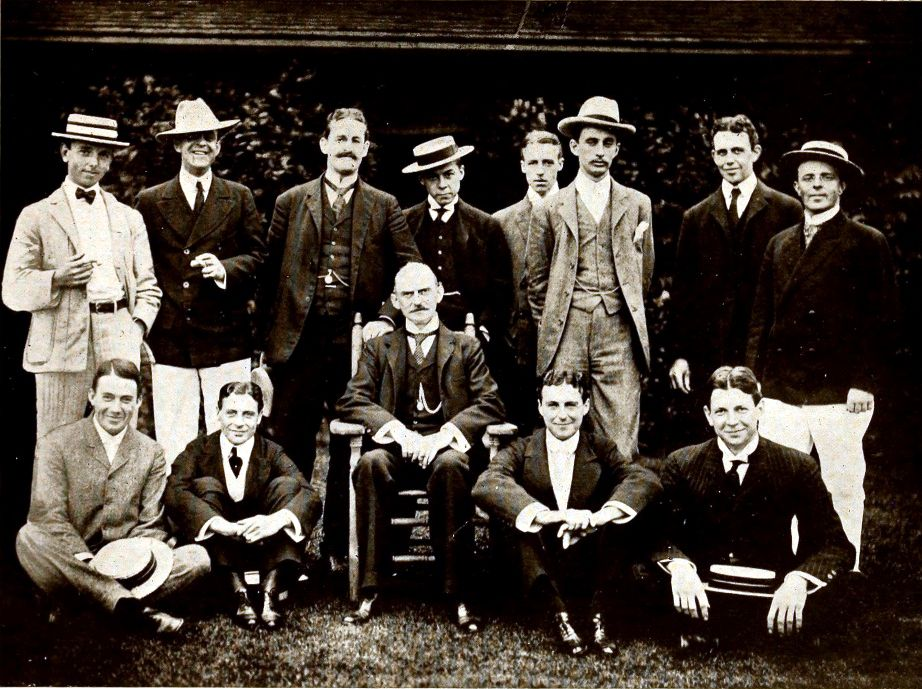 | The Dohertys in America, 1902 | Photographer unknown | Public domain | Source |
 | 1914 International Lawn Tennis Challenge, Forest Hills | J. Parmley Paret | Public domain | Source |
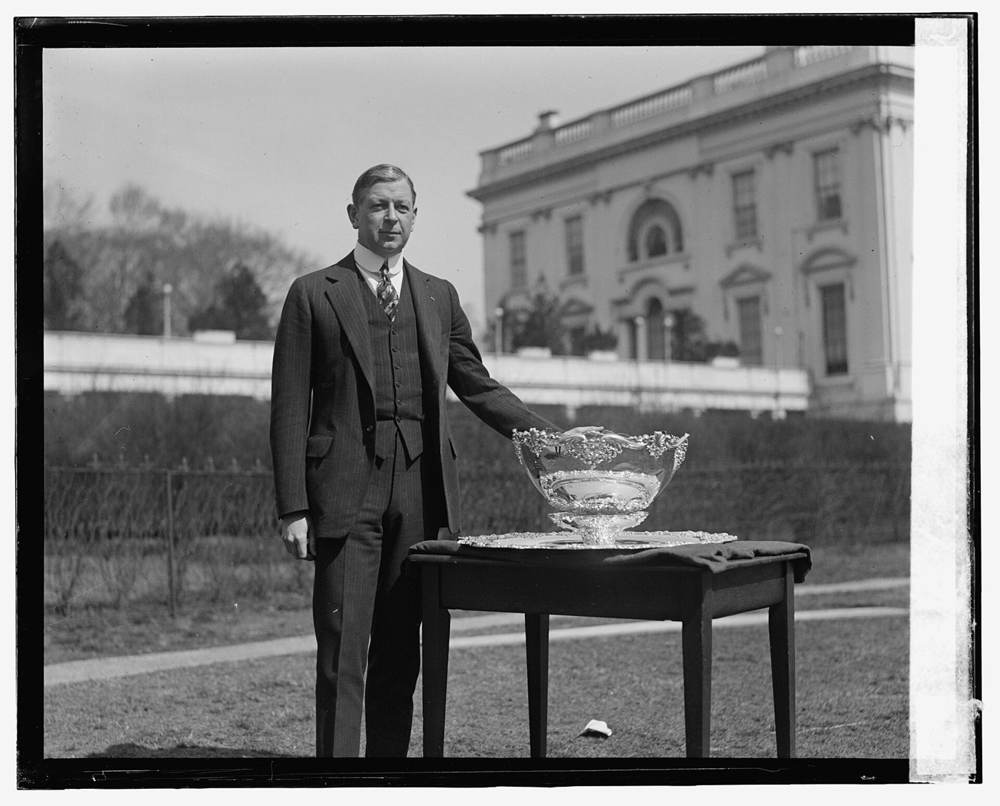 | Dwight Davis, 17 March 1924 | National Photo Company Collection, Library of Congress | Public domain | Source |
 | Davis Cup at Czech Radio, Prague, 28 November 2012 | Draceane | CC BY-SA 3.0 | Source |


_-_btv1b53252035g.jpg){kind=link}
_Allison,_Brugnon,_Davis,_Cochet,_Van_Ryn_-_btv1b53258243t.jpg){kind=link}

_du_30_Avril_au_30_Novembre._(Poster_advertising_the_1904_World%27s_Fair).jpg){kind=link}


_-_btv1b532033055.jpg){kind=link}


Text sources
Family history draws on the published record, cited on the Family History page. Lewis W. Baldwin Jr.’s service is documented in his Princeton Alumni Weekly memorial.